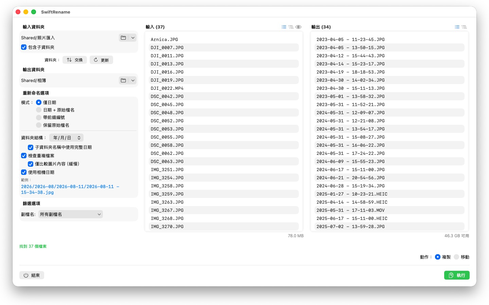
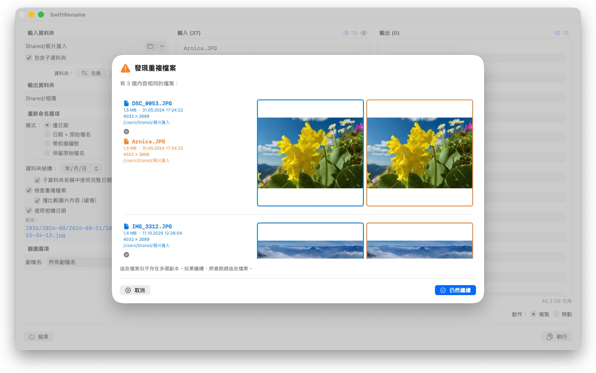

一次重新命名數百張照片與檔案——依相機日期、依序編號，或分類到年份與月份資料夾中。重複檔案會自動偵測並略過。



SwiftRename 是一款強大的工具，能在您的 Mac 上批次重新命名、複製與移動檔案。選擇一個資料夾，決定新名稱的樣式，查看即時預覽——然後執行。
24 種語言：Deutsch · English · Español · Français · Italiano · Nederlands · Português · Svenska · Norsk · Suomi · Polski · Čeština · Hrvatski · Magyar · Română · Türkçe · Русский · Українська · فارسی · ไทย · 日本語 · 한국어 · 简体中文 · 繁體中文
重新命名模式
- 僅日期：以檔案的日期命名（例如 2024-01-15 - 14-30-00）
- 日期 + 原始檔名：在原始名稱前加上日期
- 帶前綴編號：以您自訂的前綴依序編號（例如 旅行_0001）
- 保留原始檔名：不更動名稱，僅將檔案分類到資料夾中
資料夾結構
自動依年、月或日將檔案分類到資料夾中——若您偏好，每個子資料夾名稱都可包含完整日期（例如 2026/2026-02/2026-02-20）。跨越多個年代的檔案會另外建立年代資料夾。或選擇「保留」，將來源資料夾的子資料夾階層原樣複製到目標位置。
相機日期
照片與影片會以實際拍攝的時刻命名：SwiftRename 會讀取相機日期（EXIF）——支援所有主要相機廠牌（Canon、Nikon、Sony、Fujifilm 等眾多品牌）的 RAW 格式，以及 HEIC、JPEG、PNG、TIFF 和常見的影片格式。若某個檔案沒有相機日期，則改用其建立日期。
重複偵測
重複檔案會依檔案大小與內容偵測——與建立日期無關，因此即使是時間戳記不同的同一張照片也無法蒙混過關。選用的影像比對甚至能找出被其他 App 重新儲存過的照片。縮圖預覽讓您可以並排比較兩個檔案；重複檔案會自動略過。
更多功能
- 一鍵複製或移動——包含在同一資料夾內就地重新命名
- 快速存取最近使用的輸入與輸出資料夾
- 可納入子資料夾；檔案清單可以平面或資料夾樹狀方式檢視
- 以多選方式篩選副檔名
- 在變更任何內容前即時預覽新名稱
- 可還原與重做整個操作（Cmd+Z）
- 顯示進度，含檔名與百分比——可隨時取消
- 操作開始前會先檢查可用磁碟空間
- 直接從 Finder 拖放資料夾
一切都保留在您的 Mac 上。沒有網路連線、沒有帳號、不收集任何資料。
- 需要 macOS 12 或以上版本
- 支援 24 種語言
- 技術支援： SwiftAppsBavaria@gmx.net
更多 App
sName2Date Lite
每次處理一個檔案的版本：將檔案名稱中的日期作為拍攝日期寫入照片、影片或錄音，手動設定日期，將名稱改為 ISO 格式，並可用 ⌘Z 還原所有處理——功能與 sName2Date 相同，只是無法處理整個檔案夾。
sCollectPlay Lite
sCollectPlay 的精簡版：直接開啟檔案夾、iTunes XML 或 sCollect 媒體庫，播放其中的音樂、影片、有聲書與 Podcast——支援播放列表、音軌與字幕軌、慢動作與逐格播放。每次工作階段只能使用一個來源；分欄瀏覽器、自訂播放列表與最近使用的來源僅限完整版。
sBikeBridge
分析自行車騎乘紀錄，無需上傳至任何平台：讀取任何以此格式記錄的碼錶所產生的 FIT 檔案，以及 GPX 與 TCX。騎乘紀錄儲存在 Mac 上的專屬資料庫——包含地圖、功率與心率、照片與備註；匯入時會辨識重複項目。依年或依月的統計數據，以及依距離、爬升高度與時長篩選，讓騎乘紀錄易於比較。地圖也可視需要離線使用。